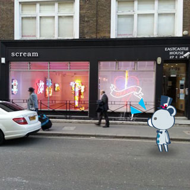

날씨가 따닷해져서
또다시 아이스커피와 함께 로동후 센트럴를 헤매는중 ㅎㅎㅎ
1.외주
아쥬아쥬 완벽하게 100% 모든작업이 마무리된건 아니지만
이제 어려운건 다 지나갔당
주말에 놀러나갈 여유가 생겼음 ㅎㅎㅎ
아 진짜 올해 상반기 나 뭐한거야 ㅡㅡ;;
다시는 이런 무식한짓 안하리라 다시한번 다짐;;;;
2.한인마트
회사근처에 한인마트가 있어서
좋아라~매주 월요일 꼬박꼬박 장을봤었다
쌀사고 김치사고 반찬사고 기타등등
근데 작년이맘때쯤? 일년 조금 넘었다 덜되었나
뜬금없이 한국 병음료수가 마시고싶길래 점심먹은후
가게들어가서 하나 사왔는데
사무실올라가던중 유통기한이 2개월 이상 지나있는걸 발견
그길로 다시 돌아가 유통기한 지났다고 다른걸로 교환해가겠다고
음료수 코너쪽으로 갔더니 세상에 전부 유통기한이 다 지나있는것이다 ㅡㅡ;
결국 환불받고 나왔음;;
병음료라는게 유통기한이 엄청 길지않나? 이걸 2개월넘도록 방치한단 말야?
일케 생각하고 그뒤로 유통기한 꼬박꼬박 확인하는 버릇이 생겼다
그리고 아쥬 이용을 안할수는 없는노릇이지만(우선 가깝다는게 ㅜㅜ)
확실히 이 가게 이용횟수는 줄었다;;
암튼 죠게 벌써 일년도 더 된 일인데
최근 한인커뮤니티 게시판에 누가 글을 올렸음
한인마트 유통기한 조심하라고
읽어보니 같은곳 ㅋㅋㅋㅋ
나만 그런게 아니었어;;
근데 댓글달리는게 어떤사람말이
일부러 주인아저씨 들으라고 이거 유통기한 지났다고 말하니까
원래 수입식품 유통기한은 형식적인것이고 실제로 3-6개월정도 길기때문에
먹어도 괜찮다 - 라고 이야기했다는 댓글을 봤다
.........그래서 카운터앞에 유통기한 왕창지난걸 '세일'이라고 붙여서
판매를 하는 이유였군 ㅡㅡ;;;
가게갈때마다 궁금했는데 이제야 궁금증이 풀렸어;;;;;;;
.............저래도 장사가 되니까 저리 하는거겠지? ㅜㅜ
근데 유통기한 버젓히 찍힌것도
3-6개월 정도는 지나도 괜찮아요~ 이래 장사를 하는데
유통기한 확인못하는 한인식당들은 어떨지
지금 마구 상상의 나래를 펼치는중 ㅜㅜ
에잇;; 어딜가든 좋은사람도 있고 나쁜사람도 있다지만
이런거 볼때마다 기분꽁기꽁기;;;;;
3.휴가
담주 주말 윈저댕겨오고
29일날 물괴기 언니오구 XD
5/9일날 한국간다 ㅎㅎㅎㅎㅎ
(이날 물괴기언니는 아침비행기 나는 저녁뱅기로 돌아감 ㅋㅋㅋ
같은날 다른시간 ㅎㅎㅎ)
어쩌다보니 거진 3년만에 가는 한쿠욱 ㅜㅜ
5/10-20일 한국에 있어욤 놀아주세요 굽신굽신
씐나게 TO DO 리스트 작성중 XD
내일은 PICK ME UP 놀러간다
작년에 댕겨온 기억이 아직도 생생한데
벌써 1년이 흘렀단 말인가 ㅜㅜ
4월말-5월중순까지 이것저것 이벤트도 많고 놀일도 많아서 행복하당 ㅎㅎ
개인프로젝트도 진도좀 나가야제
화이팅인겝니다 ㅎㅎㅎ
우선 주말엔 놀아야지~희희희(←;;;)